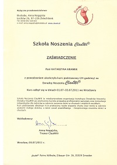

Dlaczego uczę rodziców noszenia w chustach? Powodów jest kilka:
1) Jestem przekonana, że niemowlęta i małe dzieci potrzebują częstego i bliskiego kontaktu fizycznego z rodzicami (i innymi opiekunami). Same nam o tym mówią – ich chęć bycia noszonymi jest nie do przeoczenia. Chusta może doskonale służyć zaspokojeniu tej naturalnej potrzeby bliskości. Trzeba jednak pamiętać, że – jak każde narzędzie – chusty, aby przynosić korzyść, muszą być używane w poprawny sposób. Dlatego na początku przydaje się pomoc kogoś doświadczonego, kto pomoże dobrać chustę lub nosidło i pokaże, jak właściwie wiązać i nosić.
2) Zarówno ja, jak i mój mąż, nosimy naszych synów. Dla nas obojga jest to piękne i nieporównywalne z niczym doświadczenie: z jednej strony bliskość i dobra komunikacja między rodzicem a dzieckiem, z drugiej wygoda dla obu stron. Chcemy się tym dzielić z innymi.
3) Po urodzeniu pierwszego syna spotkałam osoby, które uświadomiły mi, jak bardzo jestem kompetentna jako mama. To była wielka pomoc, szczególnie w ciągu tych pierwszych szalonych miesięcy życia naszego maleństwa, kiedy często brak mi było pewności i spokoju. Teraz ja pragnę wspierać rodziców w ich rodzicielstwie – od pierwszych dni.
4) Jestem Doradcą Noszenia ClauWi® (po kursie podstawowym). Kurs wzbogacił moją wiedzę o rozwoju i potrzebach dziecka. Uświadomił mi jednocześnie, jak ważne jest prawidłowe ułożenie dziecka i właściwe wiązanie chusty zarówno dla rozwoju malucha, jak i dla kręgosłupa osoby noszącej.
